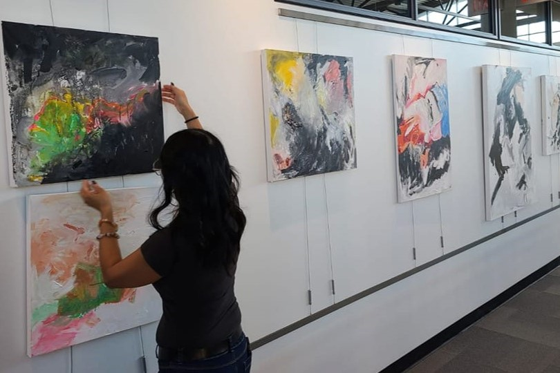

In my years of study, I would draw rather than paint with acrylic paint, pastels, conte, and chalk. I would work with anything from the hardware store; from chicken wire to 4x4 posts. Mixed media and installation was my primary medium at the time.
Now I have evolved to painting on canvas, both small and large scale. The style could be loose and intense. It could be symbolic. It could be vibrant in colours or no colour at all. Subject matter is very important; however it is not always obvious. The intention is always to get the audience to think past the norm and to understand the deeper layers which exist in everything.
In recent years, as I reached middle age I began to focus on flowers painted on round canvases. This shift came about through changes in my body, both mentally and physically. Thus, providing inspiration to delve into themes of femininity and the experience of women in society.
My flower series reflects feminism through florals, just as it has symbolized women throughout history. The various flowers are painted from the back, representing a woman's path of growth as she reaches different stages of life.

Art Exhibitions
North-End Art Girls
McKay Art Centre, Unionville
June 2025
North-End Art Girls
McKay Art Centre, Unionville
May 2024
Visions of Life
Colleen Abbott Gallery, Aurora Public Library, Aurora
November 2022-January 2023
Art of Plenty
Mckay Art Centre, Unionville
October 2022
Free Your Mind Art Exhibition
Mckay Art Centre, Unionville
June 2022
Showcase 1017 (Featured Artist)
1017 Gallery, Toronto
April 2019
Serotinal Harvest Exhibition
Kings and Queens Gallery, Hamilton
October 2018
Ferns, Fairies, and Forest Exhibition
Kings and Queens Gallery, Hamilton
November 2018
Dreams Take Flight Gala (Donation)
Revival Bar and Event Venue, Toronto
May 2017
A-B-C Elements of Design Mixed Media Art Exhibition-2016
Mckay Art Centre, Unionville
October 2016
Blossoms 2nd Annual Art Exhibition:May 2014
McKay Art Centre, Unionville
May 2014
Classics Reimagined: March 2013
Colleen Abbott Gallery, Aurora Public Library, Aurora
March 2013
Blossoms 1st Annual Art Exhibition-April 2013
McKay Art Centre, Unionville
April 2013